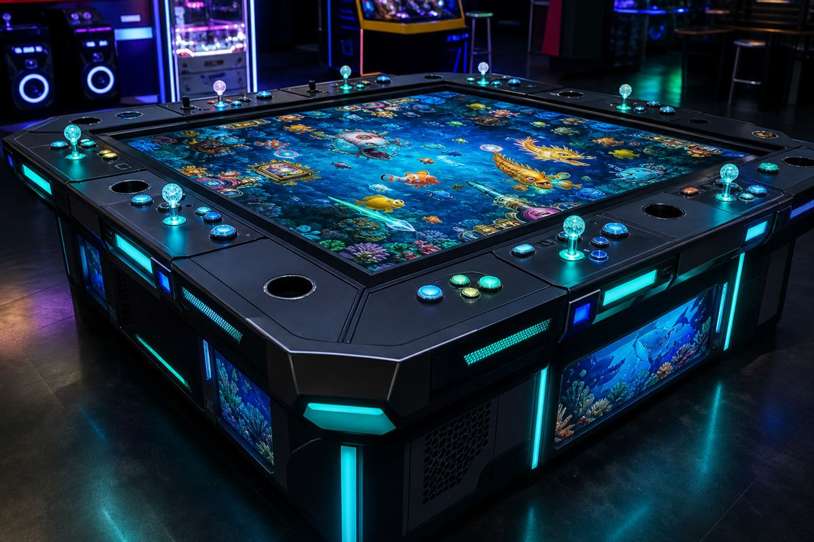

Playing fish tables in Tennessee
Tennessee venues feature fish hunter cabinets alongside other amusement machines popular with local players. You will mostly find them in arcades and amusement venues, with fish hunter cabinets among the most common. Whether you play arcade cabinets or online sweepstakes apps, the winning fundamentals are the same.
How to win on fish tables in Tennessee
- Read the payout cycle — only push hard during a paying (spit) phase; coast during an eating phase.
- Farm turtles and send-score fish near the cannon for steady value.
- Prioritise multiplier and bonus fish — that is where the money is made.
- Aim weak spots (gills and fins), using 2-3 shot bursts parallel to the fish.
- Let the room soften bosses, then take the Dragon King kill with a big cannon.
- Protect your bankroll with a firm stop-win and stop-loss.
Discipline, timing and target choice put you near the top of the payout band — that is where money is made.
Where to play near you in Tennessee
Fish tables in Tennessee are commonly found in arcades and amusement venues. Popular areas include:
- Nashville — search local game rooms and arcades for fish tables near Nashville.
- Memphis — search local game rooms and arcades for fish tables near Memphis.
- Knoxville — search local game rooms and arcades for fish tables near Knoxville.
- Chattanooga — search local game rooms and arcades for fish tables near Chattanooga.
- Clarksville — search local game rooms and arcades for fish tables near Clarksville.
Is it legal in Tennessee?
Tennessee has strict gambling laws. Treat fish-table legality as uncertain and check current state guidance before playing.
Important: This page is for entertainment and educational purposes only. Fish table / fish hunter games involve chance and skill, and outcomes are not guaranteed. Please play responsibly and follow current Tennessee law.
Be first to know which tactics are paying right now, plus local law updates.
Recommended reading
- How to make money on fish tables: the complete guide
- The three feed cycles: eat, spit and idle
- The fish weak-spot map: where to actually aim
- A complete Ocean King day-one playbook